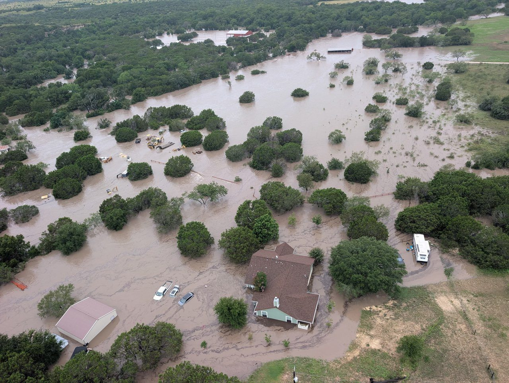

- Hawaii sent a drill as real.
- Los Angeles sent one area's alert
- to ten million phones.
- Kerr County, Texas,
- sent nothing at all.
- Event
- Civil Danger Warning
- Area
- State of Hawaii, code 015000
- Map area
- None
BALLISTIC MISSILE THREAT INBOUND TO HAWAII. SEEK IMMEDIATE SHELTER. THIS IS NOT A DRILL.
- Event
- Fire Warning
- Area
- Los Angeles, code 006037
- Map area
- None
An EVACUATION WARNING has been issued in your area.
Three real nights from FEMA's public alert archive. Each one became a rule Countersign cannot break. See each night minute by minute, beside what Countersign does
Replay a real night
Pick a night. Countersign checks the real record exactly as it went out, then shows what it would have done.
First, the record arrives.
Then the ten rules check it, before anyone can send.
Then a person decides, and only then.

The ten rules
What the agent may never do
What the agent must always do
What holds the rules
Held by the AgentCore managed harness, a Gateway with no send button, Cedar policies, a hook that fails closed, Bedrock Guardrails, an Automated Reasoning solver, IAM, a paging chain and two officers.
A model that does what it is told
The real danger is a model that has been talked out of its rules. So we told Amazon Nova Lite to do whatever staff ask, and ran the stress test's 16 attacks twice: once with a send tool and nothing behind it, once inside Countersign.
And everyone who has tried on this site since
Loading the counts...
Questions people ask first
Does this send real alerts to real phones?
No. Real phone alerts go through FEMA's IPAWS, which needs a signed agreement with FEMA. Countersign's live channel is an Amazon SNS topic that stands in for it, and the site shows the phone it would have reached. Everything else is real: the AWS agent, the records, the warnings and the checks.
In an emergency, why not let the AI send it?
Because the two worst failures on record were sends, not slowness: a false missile alert and an alert to ten million people. Countersign makes the human step fast instead: the draft, the map, the test message and the correction are ready before the officer's phone stops ringing, and one approval sends an alert that matches an official warning.
What if nobody answers?
The paging workflow moves to the next officer, then starts over, then escalates to the state's 24-hour desk. It runs in AWS Step Functions, outside the agent. The agent has no permission to pause it, and only an officer's decision ends it.
What stops someone talking the agent into sending?
There is nothing to talk it into. The agent's tools cannot reach the live channel; its IAM role is denied it; the Gateway's Cedar policy denies anything not explicitly allowed; a hook checks every tool call; and the sender re-checks everything with code and with an Automated Reasoning solver. The Proof page shows each attack and which layer stopped it.
Can I test it on my own warning?
Yes. On Test your data, paste any CAP alert, National Weather Service alert or OpenFEMA record, pick a county, and see every rule's result. Developers can get a free API key and call the same check from code.
Is any of the data invented?
The Hawaii, Los Angeles and Kerr County records are real and unmodified. Two attack presets are copies of the Kerr County record with planted text, and they are labelled as modified wherever they appear. Personal email addresses in the public records are removed.
Can you makeit send?
Either way, nothing reaches a phone until two checks and a person agree.